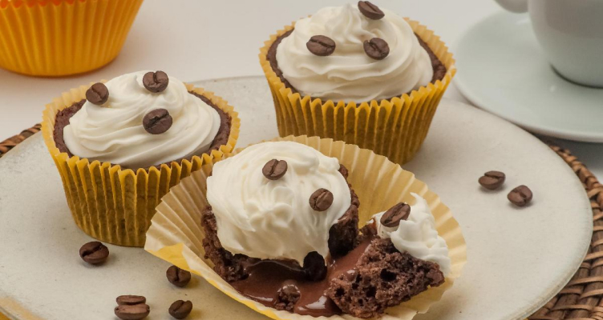

Coffee Cupcake with Whipped Cream
The perfect little cake to enjoy with your daily coffee. Super easy to make and absolutely delicious—sure to impress! Try it and let me know what you think!
Time: 1h10
Yield: 12 servings
Difficulty: easy
Ingredients
- 1 e 1/2 xícara (chá) de água morna
- 1 colher (sopa) de café solúvel
- 3 ovos
- 1/2 cup of oil
- 2 cups of sugar
- 2/3 cup of cocoa powder
- 2 1/2 cups of all-purpose flour
- 1 tablespoon of baking powder
- 2 cups of ready-made whipped cream
- Coffee beans for decoration
- 1 can of sweetened condensed milk
- 1 tablespoon of instant coffee
- 1 tablespoon of cocoa powder
- 2 tablespoons of butter
Preparation Method
In a blender, beat the water, instant coffee, eggs, oil, sugar, and cocoa powder until smooth. Transfer to a
bowl, add the flour and baking powder, and mix with a spoon. Pour into cupcake molds lined with paper liners
and place them in a large baking tray, side by side. Bake in a preheated medium oven for 25 minutes or until
cooked and golden. Remove and let cool.
For the filling, place all the ingredients over medium heat, stirring well until thickened. Turn off the heat,
let it cool, and transfer to a piping bag fitted with a round tip. Set aside. Place the whipped cream in a
piping bag fitted with a star tip and set aside.
For assembly, make a hole in the center of the cupcakes and fill it with the prepared coffee filling. Decorate
the tops of the cupcakes with the reserved whipped cream, piping in circles. Garnish with coffee beans and
refrigerate until serving.